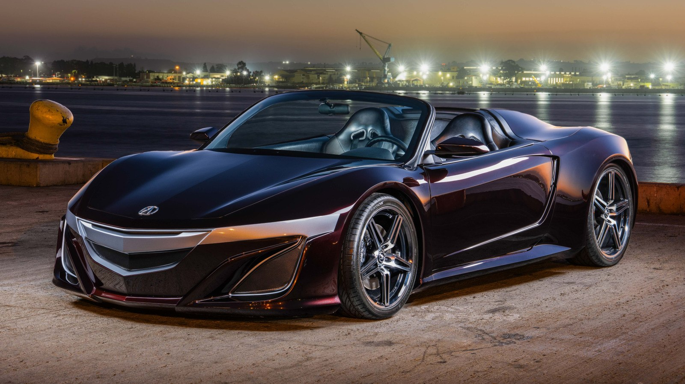
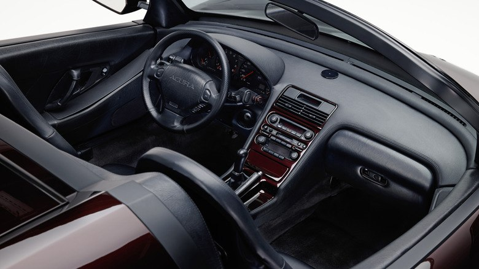
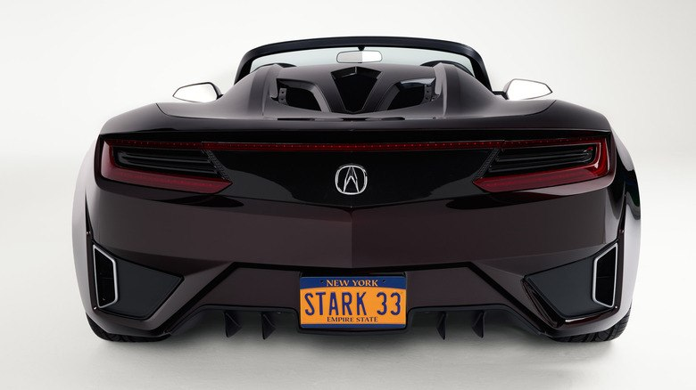

Тачки и Точка
@tachki
Тачки и Точка
@tachki
Acura NSX Roadster Тони Старка из Мстителей выставили на аукцион на торгах которые идут семь дней ставка уже достигла 985 тысячи 79 миллиона а выручку направят на благотворительность.



Acura NSX Roadster Тони Старка из «Мстителей» выставили на аукцион — на торгах, которые идут семь дней, ставка уже достигла $98,5 тысячи (₽7,9 миллиона), а выручку направят на благотворительность.
Это единственный экземпляр, построенный для фильма: кузов из смолы и стеклопластика по мотивам NSX Concept 2011 года, ветровое стекло от Chrysler PT Cruiser и номер «STARK 33».
В основе машины NSX 1991 года с 3,0-литровым атмосферным V6 и пятиступенчатой механикой, а пробег донора — 405 900 км.
Ездить по дорогам общего пользования на нём нельзя: хрупкий кузов, микроцарапины на бамперах и стойках, трещины краски на задних стойках.
🚙 Тачки и Точка
Это единственный экземпляр, построенный для фильма: кузов из смолы и стеклопластика по мотивам NSX Concept 2011 года, ветровое стекло от Chrysler PT Cruiser и номер «STARK 33».
В основе машины NSX 1991 года с 3,0-литровым атмосферным V6 и пятиступенчатой механикой, а пробег донора — 405 900 км.
Ездить по дорогам общего пользования на нём нельзя: хрупкий кузов, микроцарапины на бамперах и стойках, трещины краски на задних стойках.
🚙 Тачки и Точка